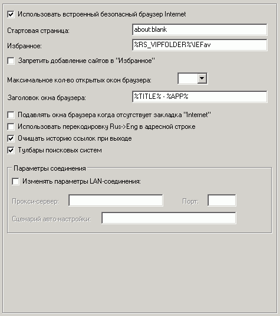

Наиболее важные опции на этой вкладке:
Использовать встроенный безопасный браузер Internet
При отключении опции настройки на этой странице не будут иметь силы, т.к. безопасный браузер запускаться не будет.
Стартовая страница
Путь к стартовой странице.
Избранное
Файловый путь к папке "избранное" для безопасного IE.
Возможны следующие варианты:
1) пустая строка - "избранное" запрещено
2) %FAVORITES% - использовать системную папку "избранное"
3) %RS_VIPFOLDER%\<папка> - использовать подпапку с именем <папка> в папке VIP-клиента. Т.е. в этом случае с избранным сможет работать только VIP-пользователь
4) <любой_путь> - использовать любую другую локальную или сетевую папку
Заголовок окна браузера
Можно установить любой заголовок по формату.
Разрешено использовать также и переменные:
%APP% - название приложения браузера
%TITLE% - название текущей веб-страницы
Подавлять окна браузера когда отсутствует закладка с интернет-контентом
Подавляет все окна браузера если нет закладок с интернет-контентом (устанавливается в опциях закладки) или они запрещены сторонней программой.